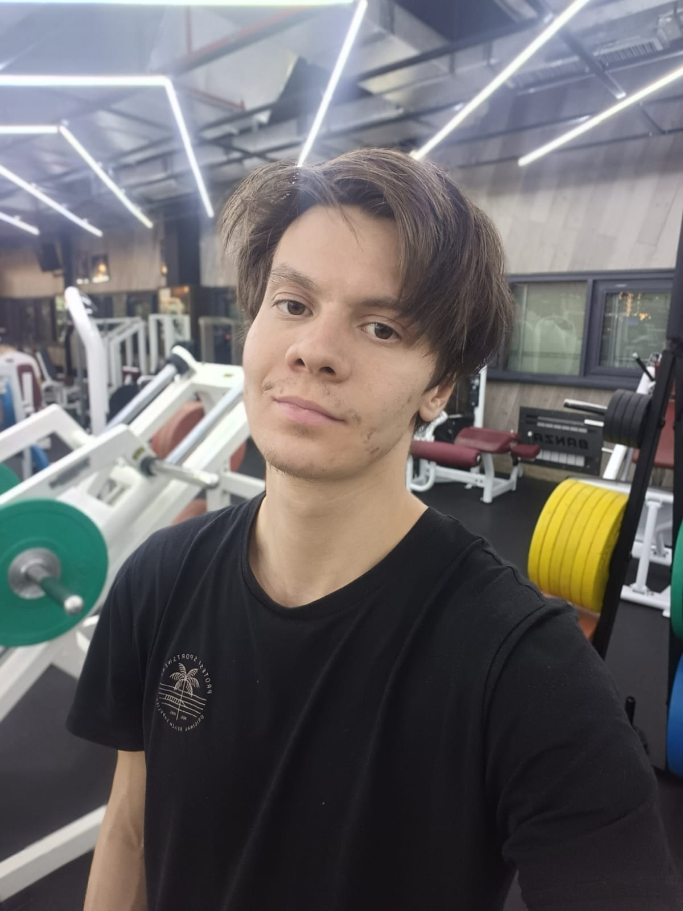

Первый абзац
Второй абзац
Третий абзац

Today I want to tell you about the trip that happened last year. On my birthday I
decided to travel to Issyk-Kul lake to have a great time.
I bought the bus ticket and booked the hotel room at Cholpon-Ata and headed on August 23rd.
I've had some difficulties in the beginning
but fortunately I did everything I wanted to.
What was new about that trip is that I tried diving for the first time in my life. It was scary but cool
at the same time. Also I was swimming,
running and playing basketball.
One of the best memories for me was running along the beach listening my favorite songs when the sun was
going down.
Honestly that was the best birthday in my life so far. I am sure I will come back there in some time.
Перейти к разделу 2
It is been a long journey
What I did was incredible, it was like a marathon
that I've never run
It was a journey along the beach that I had last summer. I was
running along Issyk-Kul
for like one day.
I was extremely tired and exhausted at the end but I made that happen.